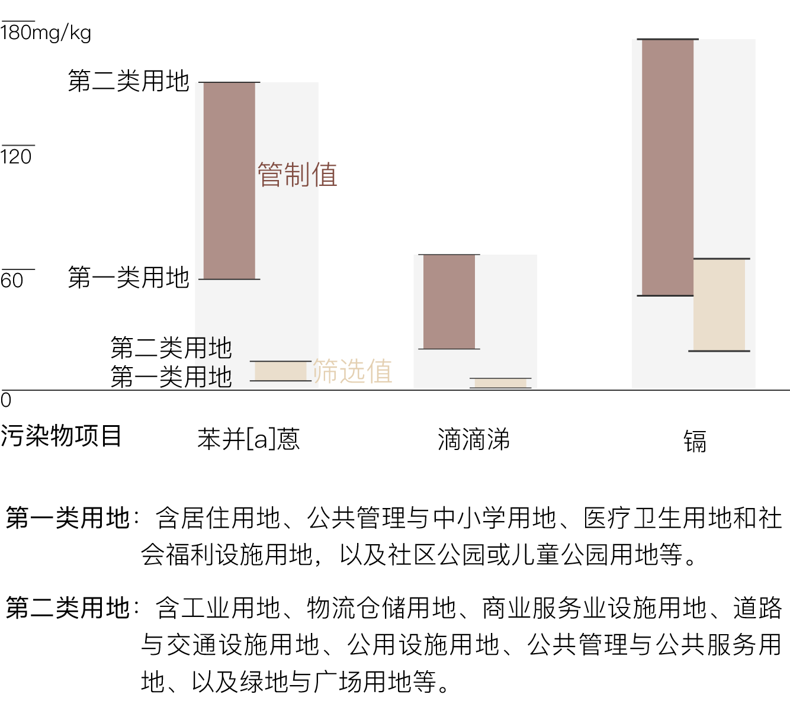

作为5号线、10号线和亦庄线三条地铁线的交汇枢纽，“宋家庄站”在北京人的生活中并不陌生。但鲜有人知的是，它当初在建设的时候，引起了中国对工业污染场地修复的重视。
2004年5号线地铁全面开建的两个月后，3名工人在进行挖掘作业到达地下5米处时，发生急性中毒，该施工场地随之被关闭。之后北京市环保局对场地进行检测，发现污染来自上世纪70年代建于此处的农药厂。工厂虽然搬迁多年，但土壤中的污染物犹在，随后这些被污染的土壤被运走焚烧处理。整件事标志着中国开始重视对工业污染场地进行修复与再开发。
像这样由工厂遗留在城市中的有毒土壤还有多少？都在哪？它们都含有什么有毒物质？修复这些有毒土壤谁来埋单？有毒土壤被重新开发成了什么建筑？
南京大学（溧水）生态环境研究院与环保组织“绿色和平”，梳理了已公布的省会及以上城市污染地块风险管控目录，财新记者试图从这些公开数据中揭开一角，了解这些“毒地”的前世今生。
数据共涉及174个污染地块，来自26个城市。
其中129块土地公布了超标污染物，出现频率最高的是重金属，占所有已知污染物的一半以上；其次是挥发性有机物和半挥发性有机物。
重金属，如铅、汞、铬、镉、砷等这些相对比重大于5的金属元素，在人体中累积达到一定程度即会造成慢性中毒。
2006年1月，湖南株洲新马村150名村民经体检被判定为慢性轻度镉中毒，其中2人死亡。根据湖南省政府公布的调查结果，该村耕地土壤受到镉污染，稻谷中重金属严重超标。
除了重金属，可挥发性有机物和半挥发性有机物也是土壤中出现频率很高的污染物。
在宋家庄地铁站土壤污染事件中，检测结果显示污染物为六六六和滴滴涕，属半挥发性有机污染物，这两种污染物引起的急性中毒可在数小时内发病，轻者头痛、头晕、恶心呕吐，重者可能会抽搐，甚至失去知觉。它们对人体的危害都是累积而持久的，其致癌性近些年来逐渐引起关注。
“挥发性有机物主要来自工业生产和化石燃料燃烧产生的废气，部分具有毒性和致癌、致畸、致突变效应。”绿色和平污染防治项目主任保航介绍，“相对于挥发性有机物，半挥发性有机物则更难降解，在土壤中存留的时间更长，主要来自交通运输和燃烧产物、化工行业。”
174个地块中，天津数量最多。但这并不意味着天津的污染地块就最多。“数据来自于已经公布的污染土块目录，这和数据公开程度有关。”保航介绍说。
武汉的污染场地最为复杂，多处污染地块兼有上述四种污染物，分别是原武汉原料场地、原武汉远大制药集团有限公司场地、原武汉力诺化学集团有限公司场地和原武汉无机盐厂场地，其中三个为化工企业。而这种地块治理起来也会相对复杂。
污染物的出现频率和原企业有很大的关系。在重庆，其污染地块原企业多为制造业，八成以上污染地块都受到重金属的污染；而对于污染地块原企业多为化工业的天津，出现频率最高的污染物则是以多环芳烃为主的挥发性有机物。
上海、石家庄、太原等地，一半以上地块的污染物都处于未知状态。
高达40%的污染地块原址是废弃化工厂，几乎每个城市都有由化工厂造成的污染土壤。
“毒地”的未来
工厂搬走了，留下的土地面临一次“新生”。
九成的污染地块将会被开发成商业住宅、公共设施和学校，这类土地被称为“一类用地”，它们将会成为人口密集活动区，土壤中的有害物质如果仍然超标，会直接或间接危害到人体健康。另外一部分土地将被开发成工厂、绿地、公共设施等用地，这类建设用地中，人体在外暴露程度相对较低，被称为“二类用地”。
各城污染地块用途转化
“毒地”要修复成可开发用地，需要达到怎样的标准？
作为土壤修复的重要指导，《土壤环境质量建设用地土壤污染风险管控标准（试行）》（下称《建设用地标准》）多项土壤污染物都规定了相应的含量标准，即“筛选值”和“管制值”，它们相当于给土壤中可能存在的污染物设立的两条浓度“红线”，针对同一块土地的一种污染物，污染物含量低于筛选值，对人体健康的风险则可忽略；超过筛选值低于管制值，对人体健康可能存在风险，需要开展风险评估；而超过管制值，对人体健康就存在风险，需要开展修复。
三种常见污染物的在不同用地中的“浓度红线”
生态环境部环境规划院相关专家对财新记者介绍道：“筛选值是基于人体健康的角度制定的基准值，如果污染地块的某种污染物超过风险筛选值，进行风险评估时，应根据污染源、暴露途径与受体等情况进一步确定人体风险可接受水平。比如地块将来规划为幼儿园，污染物的致癌风险更高，这个地块评价出的风险可接受水平可能更加严格。”
从目前已有规划的土地看来，90%以上的用地都将被开发为第一类用地，也就是说这些土地在未来的使用中，人群暴露程度更高，对其修复的标准也会更高。
谁为污染埋单
工业用地属于第二类建设用地，但它们中大多数的污染地块却将被开发为第一类用地，污染地块修复需要大量资金，少则百万，多则上亿，谁来埋单？
2016年初的“常州毒地”事件震惊全国，其污染治理费用达到3.7亿元，风险管控和修复工作已由常州市新北区政府出资完成，但对于修复款是否应由政府支付仍存异议。
2017年1月以来，公益组织“自然之友”与中国绿发会持续向法院起诉，要求被诉三家污染企业承担所有污染治理费。
“常州毒地”诉讼案
2019年1月25日，绿法会继续向最高法院递交再审申请书，要求撤销相关诉讼的二审判决。
“谁污染，谁治理”是目前土壤污染治理的基本原则。国务院在2016年出台《土壤污染防治行动计划》，规定了“造成土壤污染的单位或个人应承担治理与修复的主体责任”的原则。也就是绿发会所说到的“损害担责”。
而174块污染地块数据显示，这些已公布的污染地块中，仅四分之一是由原场地使用者修复，一半以上污染地块则由政府或国资委下属国有企业承担修复费用，另有约15%由房地产开发商承担。
四分之一的污染地块由原场地使用者修复
《土壤污染防治行动计划》还规定，责任主体发生变更的，由变更后继承其债权、债务的单位或个人承担相关责任；土地使用权依法转让的，由土地使用权受让人或双方约定的责任人承担相关责任。
“常州毒地案”中，法院认定污染企业无需承担经济赔偿的重要原因是“土地使用权已转移给当地政府”。那么这种未修复就对污染地块进行土地流转的做法是否普遍存在？
从174个污染地块中，财新记者发现已出让43块土地，只有不到三分之一完成了污染场地的修复工作。
已转让地块中已修复地块不足三分之一
污染地块在修复之前是否可以进行土地转让？这一问题在国家层面还没有明确规定。但从部分地方的监管流程中可以发现，污染地块必须在完成土壤修复之后才能转让，且针对土地流转环节，多地采取多部门联合监管的手段。
例如上海市国土局出台的《关于加强本市工业用地出让管理的若干规定(试行）》中规定，在工业用地转让、收回前以及过程评估阶段，须进行工业用地土壤和地下水地质环境质量检测和评估，相关检测报告作为建设用地使用权出让合同的附件。
财新记者在“重庆市工业污染地块全过程监控流程”也看到，国土部门需要在环保部门完成地块审查、出具土壤环境质量书面意见，符合标准情况下才能进行土地出让，而规划部门也要在环境质量符合标准情况下才能发选址意见书。
 “毒地”在哪？
“毒地”在哪？
在很长一段时间内，土地污染信息一直不为人所知，近些年相关信息才逐渐透明，污染地块的信息也逐渐被公众了解。
《土壤污染防治行动计划》《污染地块土壤环境管理办法（试行）》均规定，地方政府要建立“污染地块名录”，被列入名录的地块，不得作为住宅、公共管理与公共服务用地。每个公民都有权利去知晓他/她脚下的土地是否“健康”。
查查省会城市的工业污染地块都在哪儿
（数据库会不定期更新）